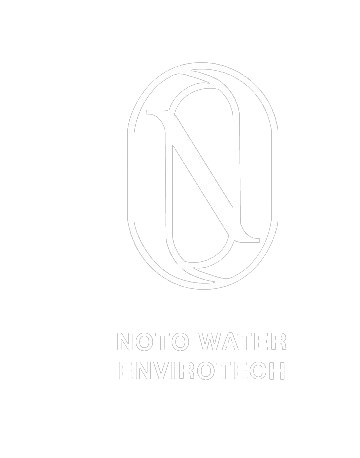

PT Noto Water Envirotech delivers integrated water treatment engineering from raw water spectrometry and custom chemistry formulation to heavy-duty skid manufacturing and turnkey global maritime export.
Turnkey Water Engineering Capacity
Established in 1995 in Bandung, Indonesia
Industrial, municipal & commercial installations
Potable, ultra-pure & industrial wastewater
Exporting across Southeast Asia & worldwide
From cutting-edge scientific R&D in our analytical laboratories to ISO-certified heavy skid fabrication and international containerized export logistics, we deliver complete end-to-end accountability.
Scientific treatability studies, proprietary membrane foulant forensics, and custom chemical synthesis designed to solve the most difficult wastewater and high-salinity challenges.
State-of-the-art fabrication facility producing high-pressure industrial RO skids, containerized plug-and-play WWTP systems, and ASME/CE compliant pressure vessels.
Direct authorized sourcing of tier-1 global membranes and high-pressure pumps combined with maritime export logistics of turnkey plants across the Asia-Pacific region and beyond.
Custom engineered, fabricated, and exported for rigorous industrial, chemical, and municipal operations.
Heavy-duty skid mounted Brackish (BWRO) and High-Recovery RO plants for boiler feed, food processing, and electronics manufacturing.
Fully integrated biological wastewater treatment & membrane bioreactor built inside 20ft/40ft insulated ISO shipping containers.
Engineered micro-bubble flotation clarifier designed for heavy industrial effluent, food processing oils, and textile wastewater pre-treatment.
High-pressure desalination plants engineered for island resorts, maritime facilities, and offshore operations with Danfoss isobaric energy recovery.
Hollow-fiber membrane ultrafiltration systems providing SDI < 2.5 pretreatment for RO and total bacteria & virus removal for municipal water.
Proprietary chemical formulations developed in our Bandung laboratories for silica prevention, high-calcium scale inhibition, and membrane CIP.
Every system we build follows an uncompromising engineering protocol ensuring zero defects, absolute safety compliance, and maximum operational uptime.
Client water sample analysis in our R&D lab: ionic balance, Langlier Saturation Index (LSI), silt density index (SDI), and organic foulants.
Detailed 3D mechanical modeling, hydraulic pipe sizing, electrical single-line schematics, and simulation to eliminate pressure drops.
ISO-certified CNC cutting, ASME orbital welding of SS304/SS316L manifolds, structural sandblasting, and precision PLC electrical wiring.
Full wet-test on the test bay: hydrostatic pressure testing, electrical automation simulation, and sensor calibration witnessed via live stream or in-person.
ISPM-15 heat-treated seaworthy timber crating, anti-corrosion barrier wrapping, customs clearance through Port Tanjung Priok, and maritime freight dispatch.
Onsite supervision or cloud-assisted live digital commissioning, operator training, and 24/7 remote SCADA telemetry monitoring.
With direct logistics corridor from our manufacturing plant in West Java to Tanjung Priok International Port, Jakarta, PT Noto Water Envirotech exports customized water treatment skids, modular WWTP containers, and specialty chemicals seamlessly across the world.
We engineer our systems using only authentic, factory-warranted components from world-leading manufacturers.
Customized water purification, effluent compliance, and zero liquid discharge systems built to withstand harsh industrial operating conditions.
Hygienic sanitary SS316L RO skids, ingredient process water purification, CIP recycling, and wastewater biological treatment.
High COD/BOD decolorization, DAF clarification, biological treatment, and advanced membrane reuse yielding up to 80% water recycling.
Containerized potable water plants for remote mining camps, acid mine drainage (AMD) neutralization, and heavy metal removal.
USP-grade purified water generation systems, double-pass RO + Electrodeionization (EDI), and sanitary orbital welded loop piping.
Founded in 1995 in Bandung, West Java, PT Noto Water Envirotech began with a clear purpose: mastering water purification chemistry. Over the last 28+ years, the company has grown from a specialized technical consultancy into a multi-disciplinary global enterprise.
Today, our integrated facility houses an analytical water research laboratory, heavy-duty skid manufacturing bays, robotic welding workshops, and dedicated export packing docks. We serve EPC contractors, multinational manufacturing plants, and municipal authorities with pride and technical precision.

Our Corporate CharterWater is never just H₂O in an industrial context—it is a complex biochemical solution. We believe that true water engineering requires mastering the fundamental chemistry first, then encapsulating it in robust, world-class machinery built to endure decades of continuous operation.
Connect directly with our engineering and export team. Receive detailed technical proposals, P&ID recommendations, and commercial quotations within 24-48 business hours.